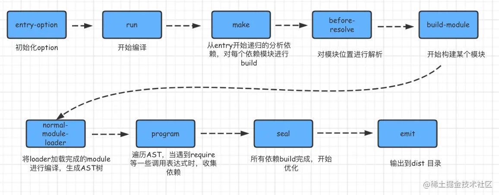

思考
讲 webpack 之前先思考下，项目中为什么使用打包工具（webpack，vite, Rollup，grunt/gulp）
介绍 webpack
webpack 是一个现代 JavaScript 应用程序的静态模块打包器(module bundler)。当 webpack 处理应用程序时，它会递归地构建一个依赖关系图(dependency graph)，其中包含应用
程序需要的每个模块，然后将所有这些模块打包成一个或多个 bundle。

entry-options 启动
从配置文件和 Shell 语句中读取与合并参数，得出最终的参数。
run 实例化
compiler：用上一步得到的参数初始化 Compiler 对象，加载所有配置的插件，执行对象的 run 方法开始执行编译
编译构建
entry 确定入口
根据配置中的 entry 找出所有的入口文件
make 编译模块
从入口文件出发，调用所有配置的 Loader 对模块进行翻译，再找出该模块依赖的模块，再递归本步骤直到所有入口依赖的文件都经过了本步骤的处理
build module 完成模块编译
经过上面一步使用 Loader 翻译完所有模块后，得到了每个模块被翻译后的最终内容以及它们之间的依赖关系
seal 输出资源
根据入口和模块之间的依赖关系，组装成一个个包含多个模块的 Chunk，再把每个 Chunk 转换成一个单独的文件加入到输出列表，这步是可以修改输出内容的最后机会
emit 输出完成
在确定好输出内容后，根据配置确定输出的路径和文件名，把文件内容写入到文件系统
五个核心概念
Entry
入口(Entry)指示 webpack 以哪个文件为入口起点开始打包，分析构建内部依赖图。
2.2 Output
输出(Output)指示 webpack 打包后的资源 bundles 输出到哪里去，以及如何命名。
Loader
Loader 让 webpack 能 够 去 处 理 那 些 非 JavaScript 文 件 (webpack 自身只理解 JavaScript)。
babel-loader（es6 转 es5），style-loader、css-loader、postcss-loader、less-loader 和 sass-loader，url-loader 或者 file-loader（图片字体文件），vue-loader
Plugins
插件(Plugins)可以用于执行范围更广的任务。插件的范围包括，从打包优化和压缩， 一直到重新定义环境中的变量等。
html-webpack-plugin、clean-webpack-plugin（自动删除 dist 目录）、mini-css-extract-plugin
<script>
{
test:/\.scss$/,
use:[
{
loader: MiniCssExtractPlugin.loader,
options: {
publicPath: '../',
hmr: process.env.NODE_ENV === 'development',
},
},
'css-loader',//打包合并 css
'sass-loader',//处理 sass，转成 css
'postcss-loader'
]
}
</script>
<script>
plugins:[
new CleanWebpackPlugin(),
new HtmlWebpackPlugin({
title:'html 模板',
filename:'index.html',
template:"./index.html"
}),
new MiniCssExtractPlugin({
filename: '[name].css', #输出文件名
chunkFilename: '[id].css', #模块名
}),
],
</script>
Mode
模式(Mode)指示 webpack 使用相应模式的配置。
配置文件Server
本地服务器：devServer
前端开发离不开这个利器：本地服务器，可以配置 devServer 并配合插件实现修改代码浏览器同步刷新，实时查看修改效果。安装 webpack-dev-server
<script>
devServer:{
contentBase:'./dist', //服务器启动的目录
open:true, //自动打开浏览器
proxy:{ //设置代理，可用于本地mock数据，本地自己启动另外一个服务
"/api":{
target:"http://localhost:9092"
}
},
port:8083, //指定端口号
hot:true, //开启HMR(Hot Module Replacement)热模块替换,由于是webpack自带的，所以要引入webpack ，监控并更新js模块的工作vue等框架自己做了，否则需要自己手动监控
hotOnly:true
},
</script>
升级
编写 loader
Loader 就像是一个翻译员，能把源文件经过转化后输出新的结果，并且一个文件还可以链式的经过多个翻译员翻译。
一个 Loader 的职责是单一的，只需要完成一种转换。如果一个源文件需要经历多步转换才能正常使用，就通过多个 Loader 去转换。在调用多个 Loader 去转换一个文件时，每个 Loader 会链式的顺序执行。
一个最简单的 Loader 的源码如下：
<script>
module.exports = function(source) {
// source 为 compiler 传递给 Loader 的一个文件的原内容
// 该函数需要返回处理后的内容，这里简单起见，直接把原内容返回了，相当于该 Loader 没有做任何转换
return source;
};
</script>
编写 Loader 时可以调用 Webpack API 有以下常用 api:
this.async() 告诉 Webpack 本次转换是异步的，Loader 会在 callback 中回调结果
this.cacheable(false); // 关闭该 Loader 的缓存功能
this.context：当前处理文件的所在目录，假如当前 Loader 处理的文件是 /src/main.js，则 this.context 就等于 /src。
this.resource：当前处理文件的完整请求路径，包括 querystring，例如 /src/main.js?name=1。
this.resourcePath：当前处理文件的路径，例如 /src/main.js。
this.resourceQuery：当前处理文件的 querystring。
this.target：等于 Webpack 配置中的 Target。
this.loadModule：但 Loader 在处理一个文件时，如果依赖其它文件的处理结果才能得出当前文件的结果时， 就可以通过 this.loadModule(request: string, callback: function(err, source, sourceMap, module)) 去获得 request 对应文件的处理结果。
实战
该 Loader 名叫 comment-require-loader，作用是把 JavaScript 中存在通过注释的方式加载依赖的 CSS 文件。
// @require ‘../style/index.css’ 转换成 require(‘../style/index.css’);
<script>
module.exports = {
module: {
rules: [
{
test: /\.js$/,
use: ['comment-require-loader'],
// 针对采用了 fis3 CSS 导入语法的 JavaScript 文件通过 comment-require-loader 去转换
include: [path.resolve(__dirname, 'node_modules/imui')]
}
]
}
};
</script>
该 Loader 的实现非常简单，完整代码如下：
<script>
function replace(source) {
// 使用正则把 // @require '../style/index.css' 转换成 require('../style/index.css');
return source.replace(/(\/\/ *@require) +(('|").+('|")).*/, 'require($2);');
}
module.exports = function (content) {
return replace(content);
};
</script>
编写 plugin
Webpack 通过 Plugin 机制让其更加灵活，以适应各种应用场景。在 Webpack 运行的生命周期中会广播出许多事件，Plugin 可以监听这些事件，在合适的时机通过 Webpack 提供的 API 改变输出结果。
一个最基础的 Plugin 的代码是这样的：
<script>
class BasicPlugin{
// 在构造函数中获取用户给该插件传入的配置
constructor(options){
}
// Webpack 会调用 BasicPlugin 实例的 apply 方法给插件实例传入 compiler 对象
apply(compiler){
compiler.plugin('compilation',function(compilation) {
})
}
}
// 导出 Plugin
module.exports = BasicPlugin;
//在使用这个 Plugin 时，相关配置代码如下：
const BasicPlugin = require('./BasicPlugin.js');
module.export = {
plugins:[
new BasicPlugin(options),
]
}
</script>
实战
该插件的名称取名叫 EndWebpackPlugin，作用是在 Webpack 即将退出时再附加一些额外的操作，例如在 Webpack 成功编译和输出了文件后执行发布操作把输出的文件上传到服务器。同时该插件还能区分 Webpack 构建是否执行成功。使用该插件时方法如下：
<script>
module.exports = {
plugins:[
// 在初始化 EndWebpackPlugin 时传入了两个参数，分别是在成功时的回调函数和失败时的回调函数；
new EndWebpackPlugin(() => {
// Webpack 构建成功，并且文件输出了后会执行到这里，在这里可以做发布文件操作
}, (err) => {
// Webpack 构建失败，err 是导致错误的原因
console.error(err);
})
]
}
</script>
要实现该插件，需要借助两个事件：
done：在成功构建并且输出了文件后，Webpack 即将退出时发生；
failed：在构建出现异常导致构建失败，Webpack 即将退出时发生；
实现该插件非常简单，完整代码如下：
<script>
class EndWebpackPlugin {
constructor(doneCallback, failCallback) {
// 存下在构造函数中传入的回调函数
this.doneCallback = doneCallback;
this.failCallback = failCallback;
}
apply(compiler) {
compiler.plugin('done', (stats) => {
// 在 done 事件中回调 doneCallback
this.doneCallback(stats);
});
compiler.plugin('failed', (err) => {
// 在 failed 事件中回调 failCallback
this.failCallback(err);
});
}
}
// 导出插件
module.exports = EndWebpackPlugin;
</script>
基于 webpack 的性能优化
总的来说基于 webpack 的性能优化 主要做两件事：
1、加快 webpack 打包速度
2、减小 webpack 打包后的文件体积
速度分析：使用 speed-measure-webpack-plugin
分析体积：webpack-bundle-analyzer
加快 webpack 打包速度
搜索时间优化（优化 loader 文件的搜索范围，主要通过配置 test、include、exclude、等字段）
解析时间 优化（使用 thread-loader 解析资源，多进程打包）
压缩时间 优化（ParallelUglifyPlugin：多进程压缩 js）
二次打包时间 优化（cache-loader，HardSourceWebpackPlugin 第二次大约提升 90% 的构建速度）
减小 webpack 打包后的文件体积
babel-loader 不解析 node_modules
<script>
module.exports = {
module: {
{
test: /\.js$/,
use: [
{
loader: 'thread-loader',
options: {
workers: 3
}
},
"babel-loader",
],
exclude: /node_modules/
}
}
}
</script>
图片压缩
采用 image-webpack-loader 来实现对图片的自动压缩
抽离公共代码
主要是配置 optimazation.splitChunks
tree shaking（只持 import 式引，不持 commonjs 的式引）
清除无用的 css、js （dead code）
使用 externals 优化 cdn 静态资源
<script>
//webpack.config.js
module.exports = {
//...
output： {
publicPath： 'cdnurl'， // 指定存放js文件的cdn地址
},
externals: {
//jquery通过script引入之后，全局中即有了 jQuery 变量
'jquery': 'jQuery'
}
}
）
</script>